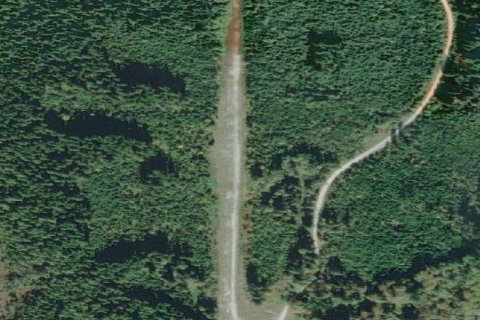

Stave Lake, BC – Canada

Aerial imagery source: Esri, Vantor, Earthstar Geographics, and the GIS User Community
| Coordinates | 49.467575, -122.225747 |
|---|
Notes
[shortfield] Location Overview The airstrip sits at the north end of Stave Lake, roughly 24 nautical miles northeast of Pitt Meadows, near Vancouver. It is oriented approximately north/south, with a large mountain to the north and the lake to the south. The surrounding peaks range from 5,600 to 7,400 feet and carry snow most of the year, and Golden Ears Provincial Park lies immediately adjacent. Camping & Recreation While there are no formal camping facilities on site, the area offers plenty to do. The lake is considered a trout fisherman's dream, with four species represented, and the strip makes for a great destination for a picnic in spectacular mountain scenery. The broader region, including Golden Ears Provincial Park next door, offers hiking and wilderness recreation for those who make the trip. Notes & Warnings The gravel strip is approximately 2,000 feet long and 300 feet wide. Landings and departures are normally made downhill to the south, over the lake. While a northbound takeoff is possible, a massive rock bluff to the north — though further away than it appears — can be intimidating. For a first visit, it is strongly advisable to fly in with someone who already knows the area, as local knowledge is important at strips like this. The strip is officially listed as an abandoned aerodrome and receives no official maintenance. A fatal accident occurred here in July 2020, when a Cessna 140 lost control during a takeoff roll and came to rest inverted. Pilots should exercise significant caution and fly with appropriate experience and aircraft capability. History Stave Lake itself was created in 1920 following the completion of a hydroelectric dam, flooding the valley and creating the man-made lake that exists today. The airstrip was originally built by a logging company to service a work-camp on site. Today the strip is virtually abandoned but is regularly maintained by volunteers to keep it from becoming too overgrown. Remnants of its logging past remain scattered around the area, including old stumps and dead trees in the lake, along with several derelict pickup trucks and the wreck of a larger vehicle — all of which add to the wild, time-capsule character of the place.